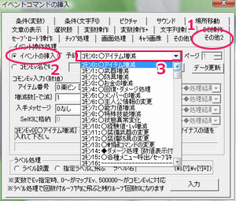
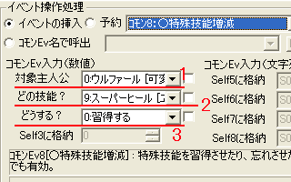
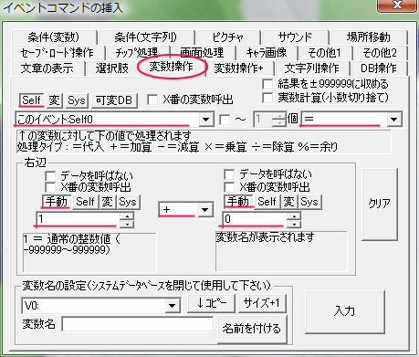
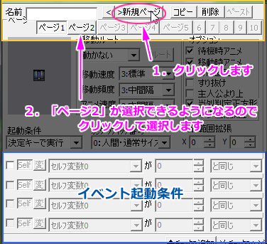
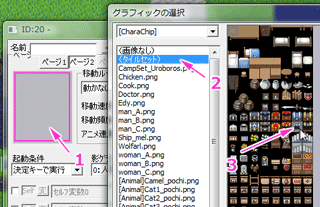
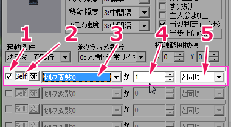
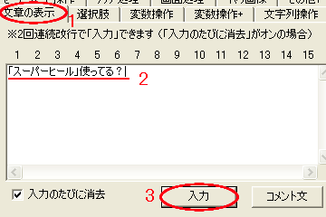
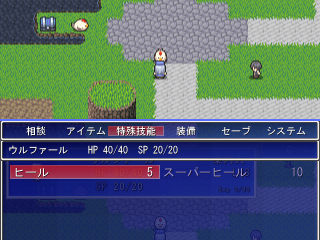
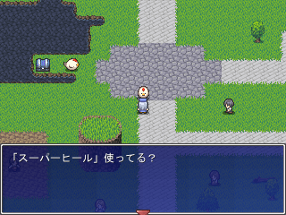

・まずマップ選択
・まずマップ選択・適当な場所にイベントを作成してニワトリの画像を設定しておきます。
手順は◆決定キーで起動するイベントの【1】～【5】を参考にしてください。
| ・調べると技能を覚えられるようにする ※おまけ ・技能を覚えたらイベントの内容を変化させる ・関連項目 ◆主人公の技の習得レベルを設定したい ◆技能（魔法）の種類を増やしたい |
| ・まずマップ選択 ・適当な場所にイベントを作成してニワトリの画像を設定しておきます。 手順は◆決定キーで起動するイベントの【1】～【5】を参考にしてください。 |
 作成したら、イベントウィンドウの右下にある「■コマンド入力ウィンドウ表示■」をクリックしてください。1.「イベントコマンドの挿入」ウィンドウが出たら、 その他2タブをクリックします。画像の1 2.丸で囲まれた「イベントの挿入」が選ばれてい るか、確認します。画像2 文字の左の白丸に黒丸がついていれば、選択 されています。 ※ もし、選ばれてなかったらクリックして選択し て下さい。 3.四角3で囲まれた場所をクリックすると、選ぶこ とができるコモンイベントのリストが表示されま す。 画像3今回は技能習得のイベントなので、 「コモン8：○特殊技能増減」を選択しましょう。 |
 続いてコモンEv入力（数値）という欄をいじります。1.対象主人公では技能を覚えさせたいキャラクターを選択します。 2.どの技能？では覚えさせたい技能を選択します。 3.どうする？では技能を修得するか、忘れさせるかを選択できます。 今回は習得するので「0:習得する」を選択します。 4.最後に右下の入力ボタンをクリックします。 これで技能の習得処理が完成しました。 |
ここまでで技能を覚えるイベントは出来ました。 しかし、このままでは調べるたびに同じ技能を覚えてしまいます。 実際には同じ技能は複数覚えられませんので、そのままでも構わないのですが、 せっかくなので技能習得後は専用のセリフを喋るようにします。 ※興味がない方はここをクリック 以降の処理の詳細は、◆一度空いたら空きっぱなしの宝箱の【5】以降を参照してください。 |
 ・「コモンイベントの挿入ウィンドウ」から「変数操作」を見つけてクリックします。・赤いラインを引いた箇所を確認します。右の画像と同じになるように設定してください。 ・最後に右下の入力を押します。 ここで設定したのは「このイベントのセルフ変数0番」に「1+0=1」を代入するという処理です。 |
 画像はイベントウィンドウの左上です。黄色の四角で囲んだ部分に注目してください。 1.「新規ページ」ボタンをクリックします。 2.「ページ2」ボタンをクリックしてページ2を開きます。 |
 2ページ目は技能を覚えた後の状態のイベントです。このままでは透明なイベントになってしまいますので、グラフィックをページ1と同じ「ニワトリ」に設定します。 1.グレーの四角をダブルクリック 2.[CharaChip]からChicken.pngを選択 できたら「OK」ボタンをクリックします。 |
 「イベント起動条件」を設定しましょう。紫の四角で囲んだ箇所に注目してください。 1.一番左のチェックボックスをクリックしてチェックをつけます。 2.「Self」ボタンをクリックして選択。 3.「セルフ変数0」を選びます。 4.数値の「1」を入力します。 5.「と同じ」を選択します。 これは、このイベントのセルフ変数0が1と同じ場合のみページ2が起動する。 という意味です。 |
 セリフを入力していきます。「■コマンド入力ウィンドウ表示■」をクリックしてください。 1.文章の表示タブをクリックします。 2.文字列の入力欄に、表示させたいセリフを入力します。 3.最後に入力ボタンをクリックします。 |
 マップをセーブしてテストプレイをしましょう！ マップをセーブしてテストプレイをしましょう！イベントウィンドウのテストプレイボタンをクリックすると、自動でセーブされます。 |
 アイテムと違い技能の習得時は、文章が表示されません。（文章を表示したい場合は【9】を参考に、ページ1に文章を追加してください） なのでキャンセルキーを押して、メニューの特殊技能から確認します。 ※うまくいかなかったら……。 【3】の設定内容を確認してください。 |
 技能の習得は確認できましたので、続いてセリフが変わっているか確認します。イベントをもう一度調べてみましょう。 入力した文章が表示されていたら成功です。 |
以上で「主人公にゲーム中に技能を覚えさせたい」は終了です。 お疲れ様でした。 |